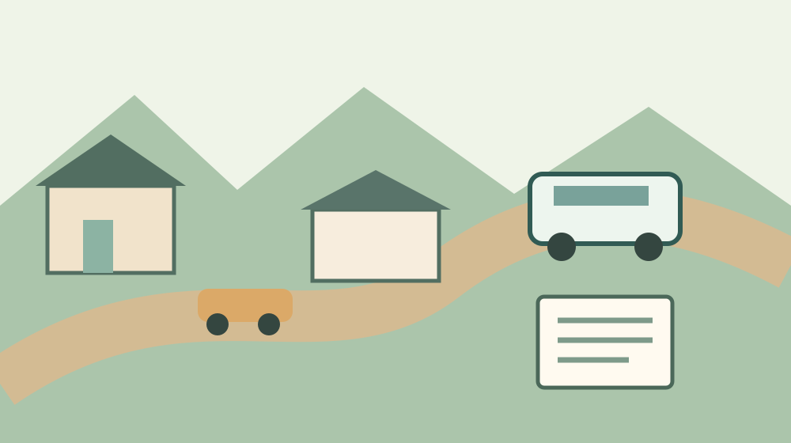

森町の天浜線駐車場｜3駅の台数を比べる
· 地区めぐり
Q. 森町で車を置いて天浜線に乗るなら、どの駅が使いやすい？
A. 天竜浜名湖鉄道の案内では、無料駐車場は遠州森駅が約30台、森町病院前駅が24台、遠江一宮駅が約10台です。台数は空きを保証するものではありません。出発前に駐車条件と列車の時刻、帰りの便を確かめてください。
台数の前に、家から帰宅までを考える
森町で車と鉄道を組み合わせるには、駐車できる駅だけでなく、家から駅に向かう人と帰りの移動まで考える必要があります。運転を引き受ける家族がいて、駅や車両の管理を担う人がいる。その日々の手間があって、乗り継ぐ選択肢が成り立っています。
私、大石浩之（磐田市／不動産業）は、駅を選ぶとき、数字の大きい駐車場から先に決めるとは限らないと考えます。駅までの道、発車時刻、帰宅する時間を合わせて初めて、家族が使える移動になります。
鉄道会社が示す3駅の無料駐車台数
天竜浜名湖鉄道の「駐車場のご案内」では、遠州森駅は約30台、森町病院前駅は24台、遠江一宮駅は約10台と掲載されています。いずれも無料駐車場として示される数字です。2026年10月30日に確認しました。
遠州森駅の約30台は、森町病院前駅の24台より約6台多い掲載値です。遠江一宮駅の約10台とは約20台の差があります。ただし「約」が付いた台数を含むため、差も目安です。実際に空いている台数ではありません。
公式の一覧にある台数は、その駅に必ず駐車できるという約束ではありません。混雑する時間帯、予約の可否、長時間や連泊の扱いは、この案内だけでは確認できませんでした。必要な条件は利用前に鉄道会社へ確かめてください。
生活圏で駅までの道を比べる
森町が2023年に掲載した公共交通会議の資料は、町内の天浜線の駅として戸綿、遠州森、森町病院前、円田、遠江一宮の5駅を挙げています。5駅があることと、今回調べた3駅の無料駐車台数が分かることは別です。ほかの駅に駐車できない、と決めつける資料ではありません。
同じ資料には、2022年の町内の自家用車保有台数が11,427台、1世帯あたり1.84台と記載されています。これは当時の町全体の数字です。個々の家に車があるか、家族の誰が使えるかを示す数字ではありません。
家から近い駅でも、車を置いてからホームへ行く道や同行者の歩く速さによって、必要な時間は変わります。荷物を持つ人、降車後に車を動かす人を含めて、駅までの所要時間を家族で見積もります。
一方、少し離れた駅が候補になることもあります。行先に向かう列車の時刻が合うか、帰りに同じ駅へ戻れるかを先に確認します。駅名が近く見えても、本数や接続の調べ方は別の記事天浜線の駅が近いは、本数と接続を見てから使う言葉で整理しています。
良い点：車だけでも鉄道だけでもない移動を選べる
無料駐車場の台数を鉄道会社が駅ごとに示している点は、出発前に候補を比べる助けになります。利用者は、駐車場の費用を候補ごとに書き出し、鉄道の運賃や駅までの車の移動と合わせて考えられます。
駅まで車で向かい、その先を鉄道にする方法には、長い区間を車で運転しない選択肢があります。運転できる家族が駅まで送り、別の家族が列車に乗る方法も考えられます。ただし送り迎えでは、運転する人にも往復の時間が必要です。
森町の公式リンク集は天竜浜名湖鉄道の路線・駅情報と運賃・時刻表へ案内しています。数字を一度控えて終わりにせず、出発前に運行情報を見直せる入口が用意されています。
注文したい点：台数だけではその日の空きは分からない
私は、駐車場の台数に加えて、満車の場合にどうするかを決めておきたいと考えます。列車の発車が迫ってから別の駐車場を探すと、停める場所を決める人にも、同行者にも負担がかかります。
どの駅が空いているか、何時なら停められるかは今回の資料から分かりません。車いす用区画や乗り降りに必要なスペース、利用時間や連泊に関する条件も個別に確認が必要です。空き情報を見たとしても、到着時の状況は変わりえます。
駅の近さだけで判断せず、時間に余裕を持つことが実務上の備えです。駐車が難しいときは家族の送迎、別の交通手段、別の日程を含めて考えます。利用者以外の場所や通行の妨げになる場所へ置くことを前提にしません。

対案・結論：今日できる確認は帰りの便から
今日できる一歩は、候補の駅を一つ書き、目的地からその駅に戻る列車の時刻を確認することです。行きの便だけ決めても、帰りの時刻が合わなければ、停めた車を取りに戻る段取りが残ります。
次に、家から駅までの道を地図で見て、実際に運転する人と確認します。駐車場の入口や利用条件は推測せず、公式案内と現地の表示を確認してください。出発時刻には、駐車後にホームへ向かう時間も含めます。
雨や荷物がある日の移動を考えると、同じ距離でも必要な余裕は変わります。ご家族に歩行の支援が必要なら、駅の設備や乗降の条件も事前に鉄道会社へ尋ねます。確認した時点と問い合わせ先をメモしておくと、次に調べ直す人が困りません。
実際の一日の動きを試して判断する方法は移住前、家より先に一日の移動を試してみるでも扱っています。山間部からの別の移動手段は三倉・天方で暮らすなら、距離より移動の代替を見るを参照できます。
家族に残す記録と大石の視点
家族の記録には、利用予定の駅、駐車場所、列車の行きと帰りの時刻、満車の場合の連絡先を書きます。誰が運転し、誰が帰宅を確認するかも一緒に残します。時刻や駐車の条件は変わるため、記録した日付を付けて出発前に更新します。
私は、家の立地を考えるときも「駅まで何分」という一つの数字だけでは決められないと思います。駅まで車を運転できる人がいるか、帰りに車を取りに行けるかが、同じ家族でも日によって変わるからです。
どの駅が一番便利かは、私にも一律には決められません。台数の多い駅が安心に見える一方、近い駅の方が送り迎えの負担を抑えられる家族もあります。暮らしに合うかは、出発から帰宅までの一回を具体的に組み立てて判断します。
駐車台数を比べるときに分けておきたい数字
駐車場の台数と実際に空いている台数は別の数字です。駅全体の収容台数が大きいほど空きがあるように感じますが、その時間に何台が停まっているかが分からなければ、到着時の空きは推定できません。実数を見ずに駐車可能と約束することはできません。
遠州森の約30台と遠江一宮の約10台は、掲載値では約3倍の開きがあります。これは駐車場の収容規模の比較です。利用者数や満車になる確率が3倍という意味ではありません。数字を使うときは、何を数えた値かを分けて考えます。
森町病院前の24台も、車の停めやすさを示す点数ではありません。駅までの道路、車からホームまでの移動、列車との接続が違えば、同じ一台を停めるまでの負担も変わります。数字は候補を絞る入口として使い、最後は利用する家族の事情で判断します。
満車の日にも帰れるようにする
駐車場が満車だった場合に備えるには、列車を逃した後の選択肢も確認します。次の便を待つのか、送迎してもらうのか、予定を変更するのか。どれが正解かは用事の時刻と同行者の体調によります。
別の駅に移る案は、走り出す前に検討します。隣の駅に移れば同じ列車に間に合うとは限りません。鉄道の時刻だけでなく、駅間を車で移動し、停めて歩く時間まで含めて判断します。無理に追いかけないことも選択です。
送迎を頼む場合、車を置く必要はなくなる一方、運転する人は家と駅の往復を担います。迎えに行く時刻と、列車が遅れたときの連絡方法を決めておけば、待つ人と迎える人の双方が動きやすくなります。運転する家族に余裕があるかも尋ねます。
家族が別々の時間に帰るときは、車の鍵を誰が持つかも確認します。車を置いた人が先に帰宅しない場合、同行者だけでは車を動かせないことがあります。出発時の同行だけで判断せず、帰りの組み合わせを書き出してください。
費用と時間を一枚に書いて比べる
車と鉄道を組み合わせる費用は、駅の駐車料金だけで決まりません。家から駅までの車の燃料、鉄道運賃、駅から目的地までの交通費が加わります。鉄道会社が示す無料は駐車場についての案内で、移動全体が無料という意味ではありません。
家族で比べるなら、駅ごとに「家を出る時刻」「列車の発車時刻」「帰りに駅へ着く時刻」を一行ずつ書きます。決まった金額のない燃料代や目的地までの運賃は、実際の予定に合わせて調べます。未確認の費用をゼロと置かないことが大切です。
同行者が駅で待てる場所や、雨の日に荷物を持って移動できるかも、時間と同じように比較の材料になります。歩く距離をこの資料だけで決めつけず、必要なら駅や鉄道会社に設備を確認します。数分の差より、無理なく乗れることを優先する家族もあります。
仕事や通院の予定が変わるとき
通院や仕事で到着時刻が決まっている場合は、遅れたときに誰に連絡するかを先に決めます。鉄道の時刻に合わせて予定を立てても、道路や運行の状況によって予定どおりに進まない場合があります。移動時間に余裕を置き、最新の運行案内を確認します。
通学や通勤で繰り返し使う場合は、一度停められたことだけで、次回も同じ条件になると決めません。曜日や出発時間が変われば、駅に着くときの状況も変わりえます。困った日を家族で記録し、移動方法を見直せるようにします。
高齢の家族が同行する場合は、車の運転だけでなく、ホームへの移動と乗り降りを誰が支えるかも確かめます。家族の支えは貴重ですが、毎回同じ人に負担を集めると続けにくくなります。送迎できない日を想定し、利用できる別の手段を調べておきます。
実家を引き継いだ家族が確認すること
森町の実家へ通う家族にとって、駅と家を結ぶ手段は、所有する家の維持にも関わります。庭や室内を確認する人が遠方に住んでいれば、列車の時間だけでなく、駅から家までの移動と帰りの時刻も必要です。
家を売るかどうかは、その日に決めなくて構いません。車が使えない日にも訪ねられるか、家族の誰に鍵があるか、移動の費用を誰が負担するかを記録するだけでも、次の話し合いの材料になります。駅の駐車台数を物件の評価額に直接置き換えることはできません。
現地を確認するときには、駅への道路だけでなく、家の前の道路や駐車スペースも確かめます。公道と私有地の区別、境界、通行条件など個別の判断が必要な事項は、資料と現地を照合し、必要に応じて専門家へ相談します。便利そうという印象だけで決めないためです。
情報を更新する人を決める
交通の情報を家族で共有するときは、調べた日時と公式ページの場所を添えます。スクリーンショットに残った時刻が、そのまま次回の運行時刻である保証はありません。予定が決まった時点で公式情報を開き直し、変わった点を家族へ伝えます。
調べる役割を一人に固定できない場合もあります。紙に駅名と鉄道会社の連絡先を控え、電話で尋ねる人、ネットで確認する人、運転する人の役を分ける方法があります。使い慣れた方法を選べるようにしておくと、特定の家族が動けない日にも準備を続けられます。
私が大切にしたいのは、家族の中で移動を支える人の時間を見落とさないことです。駐車場が無料でも、送迎や待ち時間には負担があります。駅の数字と一緒に、誰がどれだけ動くかを書き出してから駅を選びます。
よくある質問
3駅の駐車場は無料ですか？
天竜浜名湖鉄道は、遠州森駅、森町病院前駅、遠江一宮駅の駐車場を無料駐車場として掲載しています。利用条件や設備は変更される場合があるため、利用する前に鉄道会社の最新案内と現地表示を確認してください。
掲載された台数なら必ず停められますか？
いいえ。約30台、24台、約10台という数字は、案内に掲載された駐車台数で、当日の空きを示すものではありません。混雑する時間帯や予約可否は確認できていません。満車の場合の移動方法もあらかじめ考えておきます。
3駅のうち、どこを選べばよいですか？
家から駅までの移動、行きと帰りの列車、駐車場の利用条件を合わせて選びます。台数だけでは、本人や同行者にとって使いやすい駅は決まりません。必要な設備や長時間駐車の扱いがある場合は、利用前に鉄道会社へ確認します。
出典
- 天竜浜名湖鉄道：駐車場のご案内（2026年10月確認）
- 森町：鉄道・民間路線バス・タクシー リンク集（2026年10月確認）
- 森町：2023年7月26日地域公共交通会議資料（2026年10月確認）
駐車場の利用条件や運行情報は変わる場合があります。個別の利用条件は鉄道会社に確認してください。